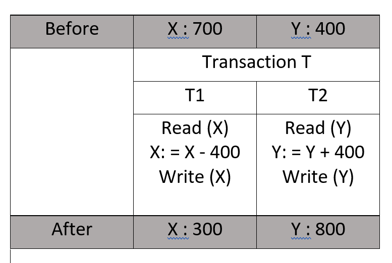
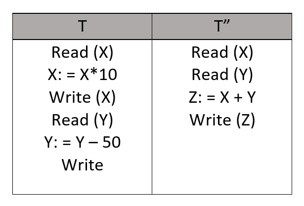

Transaksi adalah satu unit kerja logis yang mengakses dan mungkin mengubah konten database. Transaksi mengakses data menggunakan operasi baca dan tulis.
Untuk menjaga konsistensi dalam database, sebelum dan sesudah transaksi, properti tertentu diikuti. Ini disebut properti ACID.
| A | = Atomicity | = seluruh transaksi terjadi sekaligus atau tidak terjadi sama sekali |
| C | = Consistency | = database harus konsisten sebelum dan sesudah transaksi |
| I | = Isolation | = banyak transaksi terjadi secara independen tanpa gangguan |
| D | = Durability | = perubahan transaksi yang berhasil terjadi bahkan jika terjadi kegagalan sistem |
Maksudnya adalah seluruh transaksi terjadi sekaligus atau tidak terjadi sama sekali. Transaksi tidak terjadi secara parsial. Setiap transaksi dianggap sebagai satu unit dan berjalan hingga selesai atau tidak dieksekusi sama sekali. Ini melibatkan dua operasi berikut :
| - Abort | : jika transaksi dibatalkan, perubahan yang dibuat ke database tidak akan terlihat. |
| - Commit | : Jika transaksi dilakukan, perubahan yang dibuat akan terlihat. |
Atomicity juga dikenal sebagai "Aturan semua atau tidak sama sekali"
Perhatikan transaksi T berikut ini yang terdiri dari T1 dan T2 : Transfer 400 dari akun X ke akun Y.

Jika transaksi gagal setelah penyelesaian T1 tetapi sebelum penyelesaian T2 (setelah write(X) tetapi sebelum write(Y)), maka jumlah telah dikurangkan dari X tetapi tidak ditambahkan ke Y. Ini menghasilkan status database yang tidak konsisten. Oleh karena itu, transaksi harus dijalankan secara keseluruhan untuk memastikan kebenaran status database.
Artinya kendala integritas harus dijaga agar database konsisten sebelum dan sesudah transaksi. Ini mengacu pada kebenaran database. Mengacu pada contoh di atas
| Total sebelum T terjadi | = 700 + 400 | = 1100 |
| Total setelah T terjadi | = 300 + 800 | = 1100 |
Oleh karena itu, basis data konsisten. Inkonsistensi terjadi jika T1 selesai tetapi T2 gagal. Akibatnya T tidak lengkap.
Properti ini memastikan bahwa beberapa transaksi dapat terjadi secara bersamaan tanpa menyebabkan inkonsistensi status database. Transaksi terjadi secara independen tanpa gangguan. Perubahan yang terjadi dalam transaksi tertentu tidak akan terlihat untuk transaksi lain sampai perubahan tertentu dalam transaksi tersebut ditulis ke memori atau telah dilakukan. Properti status yang setara dengan status yang dicapai, ini dieksekusi secara serial dalam beberapa urutan.
Misal X = 300, dan Y = 300.
Pertimbangkan dua transaksi T dan T".

Misalkan T telah dijalankan sampai read (Y) dan kemudian T" dimulai. Akibatnya, operasi interleaving terjadi karena T" membaca nilai benar dari X tetapi nilai Y salah dan jumlah dihitung oleh
T" : (X + Y = 3000 + 300 = 3300)
dengan demikian tidak konsisten dengan jumlah di akhir transaksi
T : (X + Y = 3000 + 250 = 3250).
Hal ini menyebabkan inkonsistensi database, karena kehilangan 50 unit. Oleh karena itu, transaksi harus dilakukan secara terpisah dan perubahan harus terlihat hanya setelah dilakukan ke memori utama.
Properti ini memastikan bahwa setelah transaksi selesai dijalankan, pembaruan dan modifikasi database disimpan dan ditulis ke disk dan tetap ada bahkan jika terjadi kegagalan sistem. Pembaruan ini sekarang menjadi permanen dan disimpan dalam memori non-volatile. Efek transaksi dengan demikian tidak pernah hilang.
Properti ACID secara total menyediakan mekanisme untuk memastikan kebenaran dan konsistensi database sedemikian rupa sehingga setiap transaksi adalah sekelompok operasi yang bertindak sebagai satu unit, menghasilkan hasil yang konsisten, bertindak dalam isolasi dari operasi lain, dan pembaruan itu disimpan dengan tahan lama